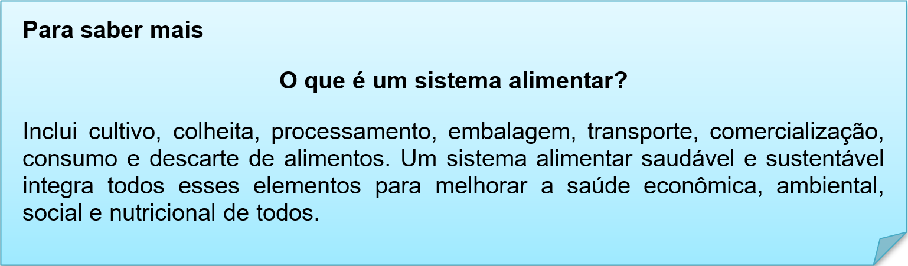

Capítulo 5: Industry Food – Indústria Alimentícia
What are the four major sectors in the food industry?
Food industry mainly consists of four distinct sectors: the farm service sector, the producers sector, the processors sector and the marketers sector. While the major services performed by each sector is distinct, many firms in the food industry have vertically integrated across sector boundaries
Nessa unidade vamos explorar o vocabulário desse setor alimentício, no texto de abertura vamos conhecer os quatros maiores setores e seus processos.
Quais são os quatro principais setores da indústria de alimentos?
A indústria de alimentos consiste principalmente em quatro setores distintos: o setor de serviços agrícolas, o setor de produtores, o setor de processadores e o setor de marketing. Embora os principais serviços prestados por cada setor sejam distintos, muitas empresas da indústria de alimentos se integraram verticalmente além das fronteiras do setor.

Contextualizando - Vamos ver os processos que passam os alimentos
Production – produção
Processing – processamento
Distribution – Distribuição
Consumption – consumo
Waste – lixo/descarte
O Fast food virou parte direta da indústria alimentícia. Com ele temos uma geração de emprego e de economia. Vamos ver os principais alimentos vendidos nesse setor.
Aqui temos os motivos que o Fast Food virou tendência (trend) e é o modelo da indústria de alimentos.
#1 – Rapidez no método de pagamento
#2 – Cardápios mais eficientes
#3 Mecanização da comida rápida

Na nossa biblioteca temos a dica desse livro essa coleção que ensina como aprender facilmente um novo idioma com a ajuda de imagens. Neste novo livro, você aprenderá os nomes de 100 alimentos em um novo idioma com a ajuda de imagens e textos bilíngue.

Pictionary – Dicionário ilustrado alimentício

Reconstruindo conhecimentos – Profissões, ocupações e expressões
Profissões em inglês e português
Termos relacionados:
Cargo: Job title
Profissão: Profession / Occupation
Dica: Para falar que você é certo profissional, utilize a expressão I am a/an:
I am a doctor.
I am a salesman.
I am a plumber
Para falar de outras pessoas, observe a tabela:

Sempre existe equivalência direta entre os nomes das profissões em países que são, por natureza, tão diferentes. Não raro, uma explicação adicional é necessária para descrevermos em língua inglesa os equivalentes de certas profissões mais comuns no Brasil.
A correspondência entre os nomes de cargos é ainda menos frequente do que a que encontramos entre as profissões. As nomenclaturas de certos cargos variam muito de empresa para empresa, de setor para setor e, em alguns casos, variam com o passar do tempo.
Esta é uma lista com as principais profissões e suas traduções para português. Você já deve saber que em muitos casos acrescentamos o sufixo -er aos verbos para formarmos o nome das profissões em inglês. Embora haja muitos exemplos na relação abaixo que comprovam esse tipo de formação, é claro que há outras formas de dizermos os nomes das profissões.
ACCOUNTANT = contador
ADMINISTRATOR = administrador
AGRONOMIST = agrônomo
ARCHITECT = arquiteto
ATHLETE = atleta
BABYSITTER, BABY-SITTER, SITTER, NANNY (AmE)
BAKER = padeiro
BANK CLERK = bancário
WELDER - soldador
BANK TELLER = caixa de banco
BARBER = barbeiro
BARISTA = barista (quem tira café em casas especializadas)
BARTENDER = barman
BLACKSMITH = ferreiro
BRICKLAYER, MASON = pedreiro
BUTCHER = açougueiro
BUTLER, MAJOR-DOMO = mordomo
BUYER = comprador
CABDRIVER, CAB DRIVER, TAXI DRIVER, CABBY, CABBIE = taxista
CABINET-MAKER = marceneiro
CARPENTER = carpinteiro
RANCHER = pecuarista
CASHIER = caixa
CHEF = chef
CLERK = auxiliar de escritório
COBBLER = sapateiro
COMPUTER PROGRAMMER = programado
COOK = cozinheiro
DOORMAN = porteiro
DRIVER = motorista, piloto de automóvel
ELECTRICIAN = eletricista
FARMER = fazendeiro; produtor rural; agricultor
FIREFIGHTER, FIREMAN = bombeiro
FISHERMAN = pescador
FLIGHT ATTENDANT = comissário de bordo
FOREMAN = capataz; encarregado
GARDENER = jardineiro
GLAZER = vidraceiro
HAIRDRESSER, HAIRSTYLIST = cabeleireiro
LOCKSMITH = serralheiro; chaveiro
MAID = empregada doméstica
MILKMAN = leiteiro
PAINTER = pintor
PLUMBER = encanador, bombeiro (RJ)
SALESMAN* = vendedor
SALES REPRESENTATIVE, SALES REP = vendedor
SALESWOMAN* = vendedora
SCIENTIST = cientista
SEAMSTRESS = costureira
SECRETARY = secretária
TEACHER = professor
OPERATOR = operador
OPERATOR, TELEPHONE OPERATOR = telefonista
TELLER = caixa (geralmente de banco)
VALET = manobrista
WAITER* = garçom
WAITRESS* = garçonete
Aplicando ao nosso vocabulário
John is a chef. > John é um chefe de cozinha.
She is cooker. > Ela é uma cozinheira
They are cookers. > Eles são cozinheiros.
I am a casher. > Eu sou caixa.
O que aprendi
• Tipologias de processos alimentares;
• Variações de profissões;
• Expressões de relacionada a profissões;
• Dicas de dicionários sobre alimentos;
• Na gramática a escrita descritiva das profissões.
Praticando
Utilizando nossos processos alimentícios, descreva em inglês o processo do MILK, leite até chegar ao consumidor. Consulte nossas listas e vocabulários para escrever corretamente.
1º Farmer (fazendeiro)
Descreva as profissões de cada pessoa apresentada na imagem.

He is a painter. > Ele é um pintor.
___________________________
___________________________
___________________________
___________________________
___________________________
___________________________
___________________________